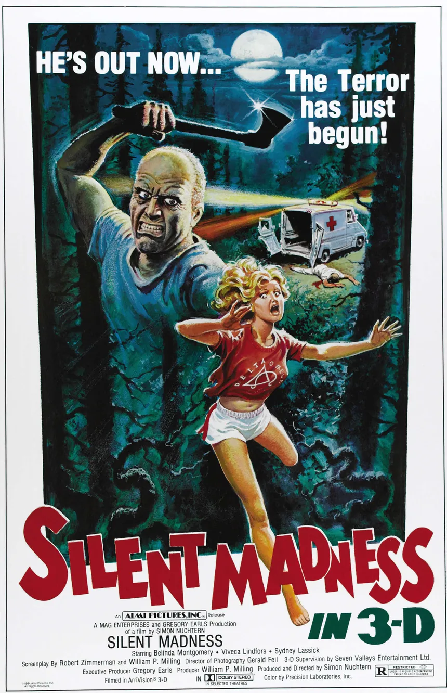
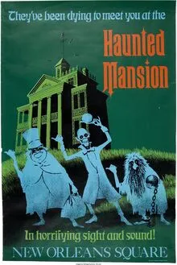

En la penumbra de una noche sin luna, el aire se cargaba de un silencio opresivo,
interrumpido solo por el susurro del viento entre los árboles. En un pequeño pueblo olvidado por el tiempo,
los ecos de antiguas leyendas resonaban en cada rincón, susurrando advertencias sobre lo que acechaba en las sombras.
Los habitantes, con miradas nerviosas, evitaban la vieja mansión al final de la calle, donde las historias de desapariciones y risas
inquietantes se entrelazaban en un tapiz de horror. Aquella noche, un grupo de amigos, desafiando el temor que envolvía el lugar,
decidió adentrarse en lo desconocido, sin imaginar que lo que encontrarían no solo pondría a prueba su valentía, sino que desataría algo oscuro
que había estado esperando su llegada.

Al cruzar el umbral de esta Scare Zone, te adentras en un mundo donde la realidad se mezcla con la pesadilla.
Las luces parpadeantes y los sonidos distorsionados te envuelven,
creando una atmósfera de inquietud. A cada paso, sientes que algo te observa, acechando en las sombras.
Aquí, las leyendas de almas perdidas cobran vida, y los ecos de risas macabras se entrelazan con gritos lejanos.
Las criaturas que vagan por este territorio están sedientas de miedo y dispuestas a jugar con tus peores temores. Atrévete a explorar, pero recuerda: en este lugar,
la oscuridad nunca está sola. ¿Te atreverás a enfrentarte a lo desconocido?

Al cruzar la puerta de esta casa embrujada, el tiempo parece detenerse. La madera cruje bajo tus pies, y el aire, espeso y frío,
está impregnado de un aroma a polvo y descomposición. Las paredes, cubiertas de retratos desgastados, parecen observarte con ojos que han visto más de lo que deberían.
Aquí, los ecos de risas pasadas se entrelazan con lamentos lejanos, creando una sinfonía inquietante. Cada habitación cuenta una historia oscura,
cada rincón esconde secretos que han permanecido en silencio por generaciones.
¿Te atreverás a explorar sus pasillos, a desenterrar lo que está enterrado? Prepárate, porque lo que encuentres podría cambiarte para siempre.